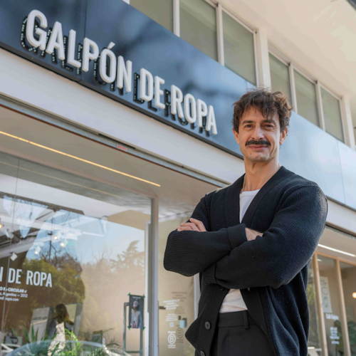
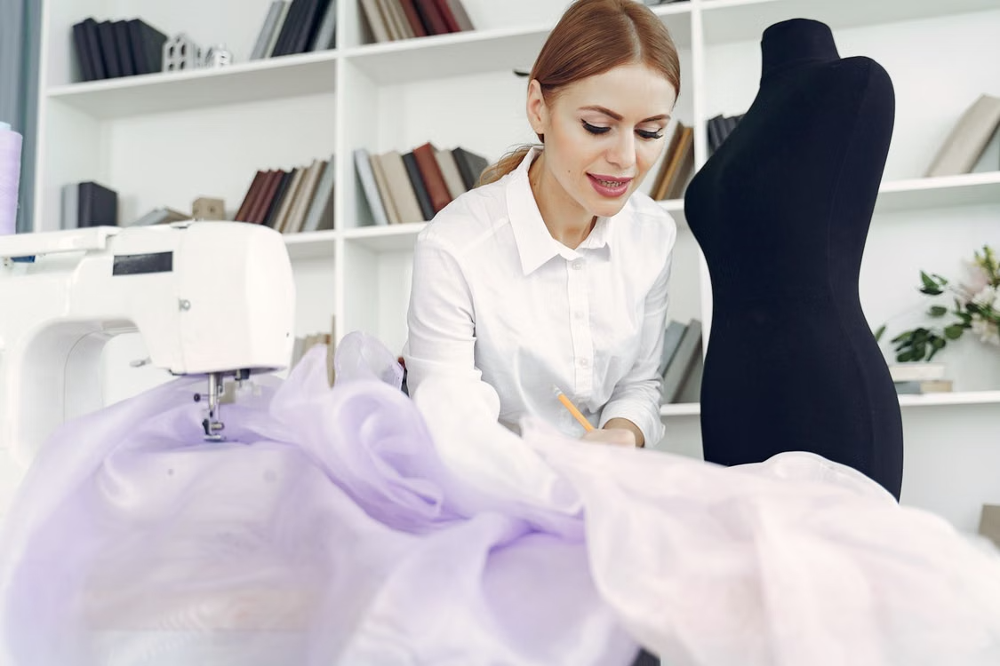
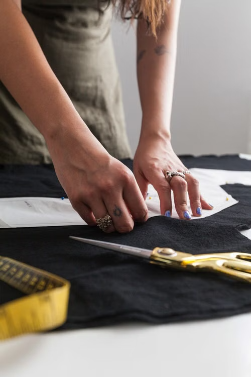
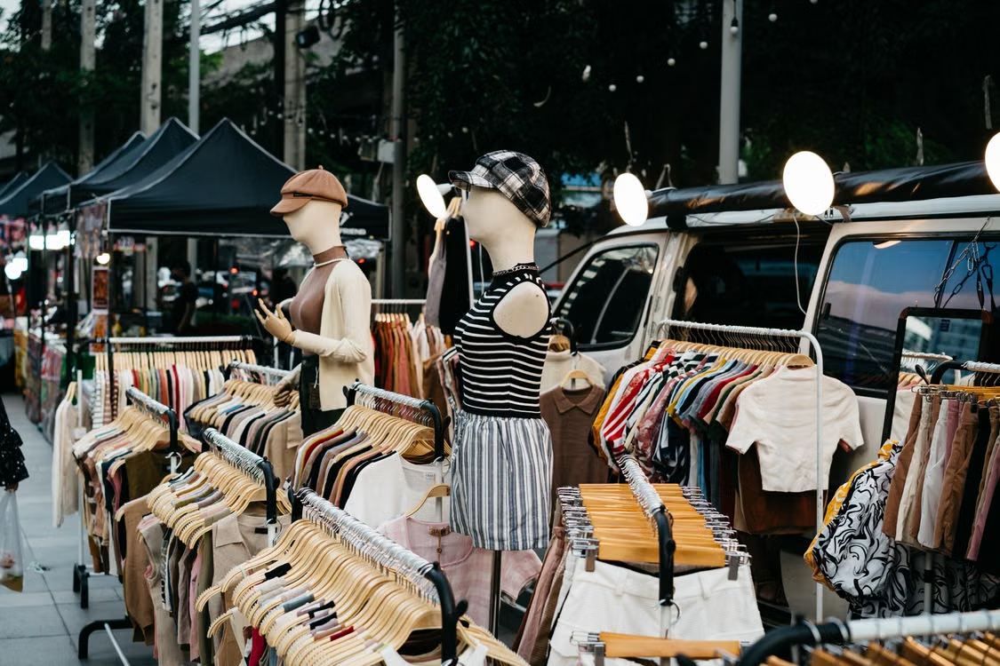
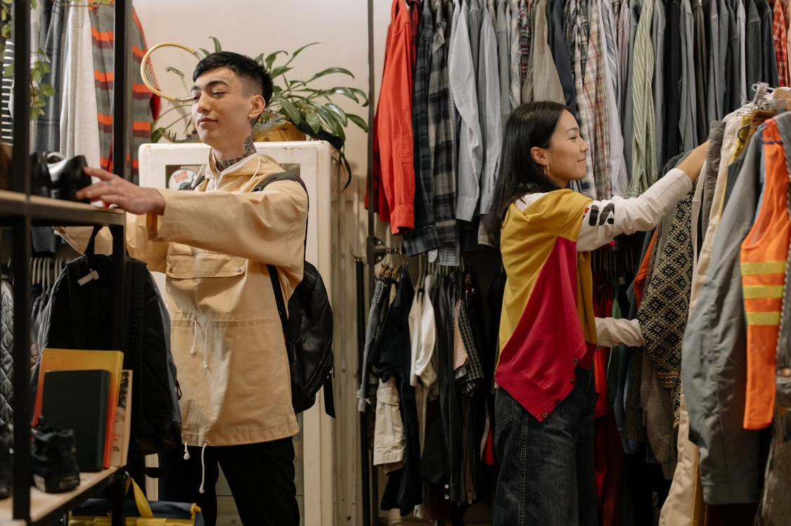
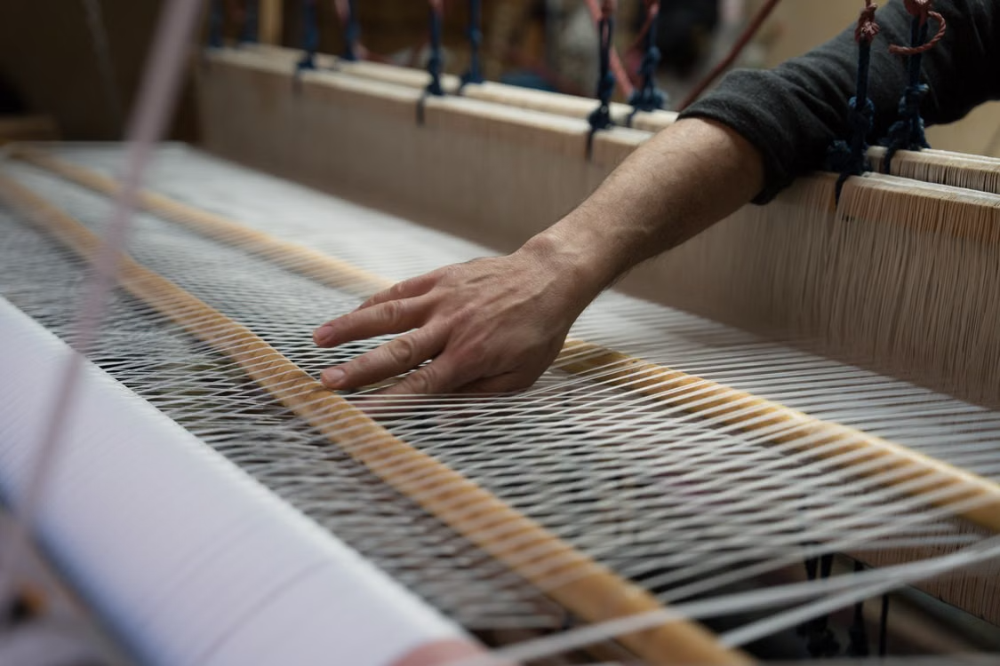

Galpón de Ropa: el emprendimiento que nació en un taller abandonado

Dos amigos de 22 años empezaron a vender ropa usada en 2012. Hoy Galpón de Ropa es una Empresa B con 94 empleados y unas 40.000 prendas por mes.


Dos amigos de 22 años empezaron a vender ropa usada en 2012. Hoy Galpón de Ropa es una Empresa B con 94 empleados y unas 40.000 prendas por mes.

Empezó vendiendo a vecinas y por Instagram, y hoy tiene empleados y su propio local. Cómo se financió, qué errores cometió y cuánto cuesta dar el salto del living a la calle..

Cuando cerró la fábrica donde trabajaba hacía veinte años, decidió producir por su cuenta. La historia de quienes salieron de la industria textil y se reinventaron solos.

Compran prendas usadas al peso, las reparan y las revenden online. Cuánto se invierte, cuánto se gana y por qué la moda circular puede ser rentable.

Arrancó con un puesto mayorista y hoy tiene varias sucursales. Los números y las decisiones detrás del crecimiento de una marca hecha desde abajo.

Artesanas del norte argentino se organizaron para vender sin intermediarios. Cómo se arma el precio de una prenda artesanal y quién se queda con cada parte.
Accedé a todas las notas exclusivas para suscriptores.